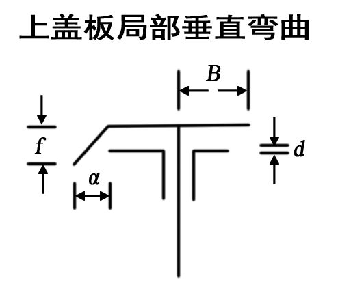
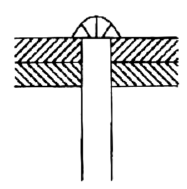
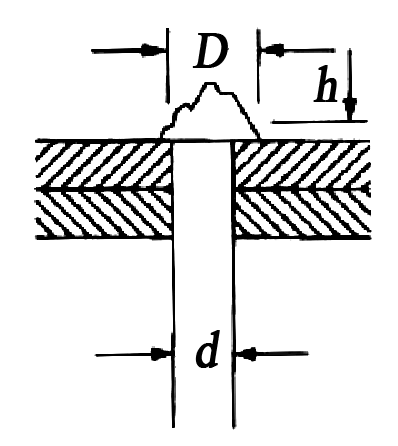
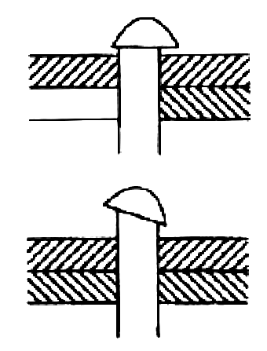
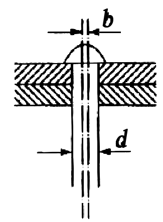
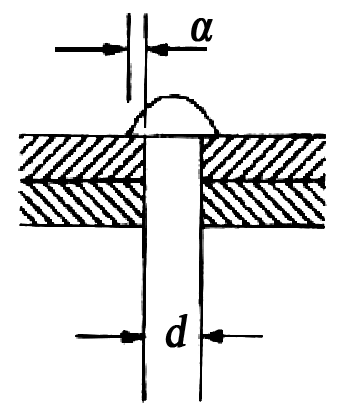
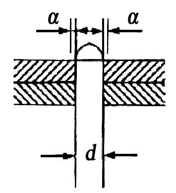
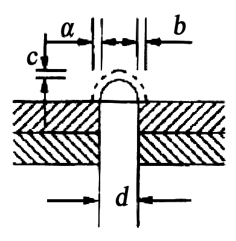
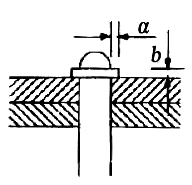
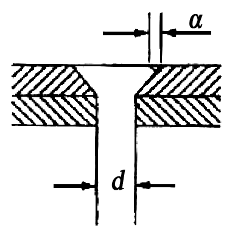

5 上部结构养护
5 上部结构养护
5.1 桥面铺装
5.1.1 桥面的养护，除应符合现行行业标准《城镇道路养护技术规范》CJJ36的规定外，尚应符合下列规定:
- 不得随意增加桥面铺装厚度和静荷载，严禁覆盖仲缩装置。
- 桥面更新后的横坡和纵坡，应满足排水要求。
- 架设在桥上的管线安全保护设施应完整、有效；线杆应安全、牢固；井盖应完好、平顺。
- 桥面上人行道铺装、盲道和缘石应完好、平整。当有缺损时，应及时维修或更换。
- 桥面作业时不得破坏原有完好的防水层和铺装层。
5.1.2 水泥混凝土桥面的病害处理和防护应符合下列规定:
- 铺装层较严重的大面积表面脱落、麻面，可凿除后重新铺装混凝土面层。在桥梁承载能力允许的条件下，也可在病害处理后加铺沥青混凝土层，但其改造方案应经专项设计。当改造方案改变了原桥面设计标高后，其伸缩装置和保护带的标高，应作出相应调整。
- 对宽度大于3 mm的桥面裂缝,应检查其发生原因，在确定无结构破坏和延续发展的条件下，可进行灌缝处理。
- 铺装层的局部损坏：I类养护的城市桥梁桥面松散、坑洞面积不应大于0.01 m²，深度不应大于20 mm；Ⅱ、Ⅲ类养护的城市桥梁不应大于0.02 m²，深度不应大于20 mm；IV类养护的城市桥梁不应大于0.03 m²，深度不应大于30 mm；V类养护的城市桥梁不应大于0.04 m²，深度不应大于30 mm。当铺装层的损坏超过规定时，应进行补修。
5.1.3 水泥混凝土桥面的修补作业应符合下列规定:
- 应确定修补范围,画线并切割成顺桥方向的矩形，不得扰动完好部分。切割深度应小于混凝土铺装厚度，但应满足桥面维修最小厚度，不得损坏防水层。
- 损坏的防水层，应按本标准第5.1.5条的要求进行修补。
- 修补结合面应清洁、无杂物、无松散，新旧混凝土结合面应连接牢固。新修补的混凝土强度等级不应低于原混凝土强度等级。
- 桥面维修，可采用半幅作业、半幅通行的方法进行施工。
5.1.4 沥青混凝土桥面的养护、病害处理和修补应符合下列规定:
- 沥青混凝土桥面的养护、病害处理和修补应按现行行业标准《城镇道路养护技术规范》CJJ36要求进行。沥青混凝土修补碾压作业时，应采取静压或水平振荡碾压方式。
- 桥面结构长期含水浸泡造成的脱落、拥包，应采取有效的排水措施，修补面干燥后，再进行面层修补。
- 修补沥青混凝土前，应检查桥面防水层，如有病害应先处置。
- 沥青混凝土修补时的新旧立面接缝处(包括沥青层与防撞墙或伸缩缝保护带混凝土立面接缝处)应采取防水措施。
- 沥青混凝土桥面可定期采取微表处、雾封层等预养护措施，相关要求应符合现行行业标准《城镇道路养护技术规范》CJJ36有关规定。
5.1.5 桥面防水层的修补应符合下列规定:
- 损坏的防水层，应及时进行修补。防水层维修应按国家现行相关标准要求进行。
- 修补后的防水层，其防水性能、整体强度、与下层粘结强度和耐久性等指标，应满足原设计要求。
5.1.6 防水混凝土结构层的维修作业应符合下列规定:
- 防水混凝土表面脱落或粉化轻微而整体强度未受影响，且防水混凝土层与下层连接牢固时，应彻底清除脱落的表面和粉化物。
- 防水混凝土受到侵蚀，表面严重粉化且强度降低，或防水混凝土层与下层已脱离连接时，应完全清除该层结构重新进行浇筑。
- 清理表面脱落层时，应清理至具有强度的表面完全露出。
- 清除损坏结构层时，应切割成规整的边界，清除应彻底，同时避免扰动其他完好部分。
- 钢筋网结构的防水混凝土层，在清除作业时，原钢筋应预留足够的搭接长度。清除作业结束后，应重新绑扎钢筋网。
- 浇筑新混凝土前，作业面应清洁、粗糙、无杂物。新旧水泥混凝土的结合面处，应采用界面胶作为新旧混凝土间的连接剂，其连接抗拉强度应大于2.5 MPa。
- 选用的防水混凝土抗渗等级应高于P6，且不得低于原设计指标要求。在使用除雪剂的地区和酸雨多发地区，防水混凝土的耐腐蚀系数不应小于0.8。严禁使用普通配比混凝土替代防水混凝土。
- 可在修补面积范围内的桥面板上适当植筋。
- 使用快凝混凝土修复材料时，其强度等级不得低于原结构层设计强度等级。
5.2 伸缩装置
5.2.1 伸缩装置的一般养护应符合下列规定:
- 伸缩装置应平整、直顺、伸缩自如，处于良好的工作状态。有堵塞时应及时清除，出现渗漏、变形、开裂，行车有异常响声、跳车时，应及时维修。梳齿板、橡胶板或异型钢类伸缩缝表面，应每月进行一次清缝工作。伸缩装置下方的梁端缝隙，应每年清理不少于两次。
- 伸缩装置对应处的栏杆、平侧石、人行道、梁体等应断开。
- 梳齿板和橡胶板式伸缩装置的固定螺栓应每季度保养一次，松动应及时拧紧；梳齿板和橡胶板丢失应及时补上，弹簧(止退)垫不得省略。严重破损的梳齿板和橡胶板，应及时按同型号进行更换。
- 伸缩装置的密封橡胶带(止水带)，损坏后应及时更换。密封橡胶带的选择，应满足原设计的规格和性能要求。
- 钢板伸缩装置的钢板松动、开焊、翘曲和脱落时，应及时修复。
- 当弹塑体伸缩装置出现脱落、翘起时，应及时清除，并重新浇筑。当伸缩装置两侧沥青混凝土破损或平整度偏差大于3 mm时，应进行清除后重新摊铺、碾压沥青混凝土，并应按新建要求重新安装弹塑体伸缩装置。
5.2.2 当伸缩装置出现损坏而无法修复时，宜选用原型号伸缩装置产品进行整体更换。选用其他类型(型号)伸缩装置产品，应符合下列规定:
- 新型伸缩装置的伸缩量和承载能力应满足原设计要求。伸缩装置的安装高度应小于桥面板至桥面层表面间的高度差。
- 无伸缩装置设计资料时，应对伸缩量值重新进行计算。
5.2.3 伸缩装置的更换施工应符合下列规定:
- 伸缩装置的预留缝宽，应根据产品说明和施工时的环境温度计算确定。安装焊接时间，应选择一天中温度变化较小的时间段内。从开始焊接到焊接结束，环境温度变化不应超过5℃。安装焊接结束后，应立即拆除定位装置。
- 当选择异型钢类伸缩装置时，设置的开口宽度应便于止水带的安装和维护。当梁端设计最大伸缩量小于30 mm时，异型钢类伸缩装置的最小开口宽度设置，不应小于30 mm。
- 桥面板(梁)或桥台背墙的锚固预埋件如有缺损，应补植连接镭筋。
- 伸缩装置在安装焊接时，连接筋与锚筋的连接形式和焊接长度应符合焊接要求，严禁点焊连接。
- 伸缩装置的水泥混凝土保护带，其强度等级应符合设计要求，且不得小于C40，宜采用钢纤维混凝土。
- 梁端与桥台(梁端)之间应隔离、封闭，宜采用硬塑料泡沫板进行填充；仲缩装置下部和异型钢类伸缩装置支撑箱下部的混凝土应完全充满。当伸缩装置的下部空间高度小于4 cm 时，应改用同强度等级的细石混凝土进行浇筑。
- 混凝土达到设计强度且伸缩装置安装完成后，方可恢复交通。
5.2.4 板式橡胶伸缩装置的更换时间，宜选择在春秋两季进行。
5.2.5 伸缩装置保护带应完好，不得有开裂、破损现象，坑洞的面积不得大于0.01 m²，深度不得大于20 mm。已松散和有坑洞的保护带，应及时修复。保护带小面积维修宜采用快速修复材料。
5.2.6 保护带与桥面的接缝高差，对I类、Ⅱ类养护的城市桥梁不应大于2 mm，Ⅲ类～V类养护的城市桥梁不应大于3 mm
5.2.7 在每年气温最高和最低时，应及时测量伸缩装置的间隙，且不得小于设计最小间距和大于设计最大间距。
5.2.8 每季度宜对伸缩装置的水平错位、相对高差进行观测。
5.2.9 固定在不同结构上的伸缩装置相对高差，不应大于2 mm。的规定。
5.3 钢筋混凝土及预应力混凝土梁
5.3.1 钢筋混凝土及预应力混凝土桥梁应每年进行一次裂缝观察。结构裂缝应重点检查受拉、受剪区域,表面温度裂缝应重点检查构件的较大面。
5.3.2 筋混凝土及预应力混凝土桥梁裂缝应根据裂缝类型和构件抗裂等级分别采用不同的方法处理。恒载裂缝宽度最大限值应符合表5.3.2的规定，超过最大限值时，应查明原因，采取下列措施进行处理:
| 结构类型 | 裂缝部位及所处侵蚀环境 | 允许最大裂缝宽度(mm) | ||
| 钢筋混凝土构件 | A类 | 0.20 | ||
| B类 | 0.20 | |||
| C类 | 0.15 | |||
| D类 | 0.15 | |||
| 预应力混凝土构件 | 非结构裂缝 | 0.10 | ||
| 结构裂缝 | 不允许或按设计规定 | |||
| 混凝土供 | 拱圈横向 | 0.30(裂缝高小于截面高一半) | ||
| 拱圈竖向(纵缝) | 0.50(裂缝长小于跨径1/8) | |||
| 拱波与拱肋结合处 | 0.20 | |||
| 墩台 | 墩台帽 | 0.30 | ||
| 墩台身 | A类 | 0.40(不允许贯通墩台身截面一半) | ||
| B类 | 有筋 | 0.25 | ||
| 无筋 | 0.35(不允许贯通墩台身截面一半) | |||
| C、D类 | 有筋 | 0.20 | ||
| 无筋 | 0.30(不允许贯通墩台身截面一半) | |||
注:所处侵蚀环境按表4.3.14侵蚀环境分类表规定选取。
- 对非结构裂缝应观察其发展状态，在不影响结构安全的前提下，可封闭处理。
- 对结构裂缝，应根据抗裂等级的不同，分别采取下列措施:
5.3.3 当钢筋混凝土及预应力混凝土结构发生混凝土剥落、露筋等现象时，应及时清除钢筋锈迹，凿去表面松动的混凝土后进行修补。对损坏面积较大的结构，凿除混凝土后不得明显降低结构的承载力，并宜分批修补。
5.3.4 当预应力混凝土构件锚固端的封端混凝土出现裂缝、剥落、渗漏、穿孔、预应力锚具暴露时，应及时对预应力锚具刷防锈漆，重做封端混凝土。
5.3.5 钢筋混凝土及预应力混凝土桥梁构件出现明显的损伤或产生明显的变形、移位，应根据特殊检测评估做设计，进行修复或加固。
5.3.6 当钢筋混凝土或预应力混凝土桥梁的主梁挠度超过规定允许值时，应进行结构评估，并应提出加固措施。
5.3.7 钢筋混凝土与预应力混凝土梁加固应进行专项设计，可采用下列方法:
- 横向联系损伤、桥梁各构件不能共同受力的板梁桥，可通过桥面补强或修复加固横向联系。
- 梁的刚度、强度、稳定性及抗裂性不足，可采用加大结构断面尺寸、增加钢筋数量、纤维复合材料或粘贴钢板等方法进行加固。加大断面及增加配筋数量应根据计算确定。
- 可采用体外预应力补强加固。
5.3.8 当双曲拱桥横向联系不足，全桥承载力不足或横向失稳时，应进行加固。
5.3.9 当拱桥主拱圈强度或刚度不足时，应进行加固。
5.3.10 当钢筋混凝土拱桥拱圈开裂超过限值时，应限制或禁止通行，并应通过特殊检测查明原因，进行处理。
5.3.11 当双曲拱桥拱圈、拱波混凝土开裂超过允许最大裂缝宽度时，应进行加固。
5.3.12 当双曲拱桥侧墙变形时，应及时处理，必要时应拆除侧墙重砌。
5.3.13 当双曲拱桥拱圈厚度偏小，承载能力不足时，应进行加固。
5.3.14 双曲拱桥拱圈及拱上空腹拱等结构开裂超过限值时，应观测、限载或禁止通行，查明原因，及时加固。
5.3.15 不得擅自在钢筋混凝土、预应力混凝土构件上钻孔及架设其他构件。
5.3.16 钢筋混凝土、预应力混凝土桥梁外刷涂料不得覆盖检查观测，不得影响养护维修；涂刷材料不得影响构件耐久性。
5.4 圬工拱桥
5.4.1 圬工拱桥应具有满足设计要求的刚度、强度、抗裂、抗渗和整体稳定性。
5.4.2 圬工拱桥外观病害的检查主要应包括拱石的脱落、灰缝脱落和渗水、拱圈纵向开裂和渗水、拱墙突出以及拱脚裂缝、变形、缺脚等。当发生外观病害时，应查明原因，进行维修和加固。
5.4.3 圬工拱桥的恒载裂缝宽度最大限值应符合表5.4.3的规定。当裂缝宽度超过表列数值时，应查明原因，及时维修与加固。
| 结构类型 | 裂缝部位及所处侵蚀环境 | 允许最大裂缝宽度(mm) |
| 上部结构 | 拱圈横向 | 0.30(裂缝高度小于截面高度一半) |
| 拱圈纵向(竖缝) | 0.50(裂缝长度小于跨径1/8) | |
| 拱波与拱肋结合处 | 0.20 | |
| 砖石墩台墩台身 | A类 | 0.40 |
| B类 | 0.25 | |
| C类、D类 | 0.20(不允许贯通墩身截面一半) |
5.4.4 圬工拱桥表面应清洁、美观、完整。圬工拱桥表面风化、剥落应及时维修。灰缝脱落应及时修补，滋生的植物应及时清除。
5.4.5 圬工拱桥结构变形超过限值时，应及时进行维修与加固。砌体损坏严重、拱轴线严重变形时，应进行翻修。
5.4.6 砖、石拱桥均应有排水设施。当原桥无防水层或防水层已损坏失效时，应重铺防水层。
5.4.7 对圬工拱桥产生的较深裂缝，应及时修补。
5.4.8 圬工拱桥拱圈损坏、强度不足或需提高其荷载等级时，应加固拱圈。
5.4.9 拱脚产生位移应及时采取加固措施。
5.5 钢结构梁
5.5.1 钢结构梁的刚度、强度和稳定性应符合设计要求。运营中根据钢结构形式，应对各部分连接节点及杆件、铆钉、销栓、焊缝进行检查、养护。承载能力或刚度低于限值等结构不良的钢结构，应维修或加固。
5.5.2 钢结构外观应清洁，冬季应及时清除冰雪。桥面积水应查明原因，及时处置。泄水孔应保持畅通，增设泄水孔其直径不应小于50 mm，钻孔前应对杆件强度进行验算。桥面铺装应无坑洼积水现象，渗漏部位应及时修补完好。
5.5.3 钢结构应每年保养一次。节点上的铆钉和螺栓松动或损坏脱落、焊缝开裂，应采用油漆标记并作记录。在同一个节点，缺少、损坏、松动和歪斜的铆钉超过10%时，应进行调换。当焊接节点有脱缝，焊缝处有裂纹时，应及时修补。对有裂纹及表面脱落的构件，应作出明显的标记，注明日期，并观察其发展状况，必要时应补焊或更换。
5.5.4 结构定期检测时，应对现场拼接焊缝等关键部位焊缝进行无损探伤检查，其质量应符合设计要求。
5.5.5 钢箱梁应定期检查内部空间积水情况，当有积水时应查清原因，并及时维修。
5.5.6 当钢梁杆件伤损容许限度超过表5.5.6的规定时，应及时整修、加固或更换。
| 序号 | 伤损类别 | 容许限度 | |
| 1 | 竖向弯曲 | 弯曲矢度小于跨度的1/1000 | |
| 2 | 板 梁 、 纵 梁 、横 梁 及 工 字 梁 |
横向弯曲D/500 | 弯曲矢度小于自由长度的1/5000，并在任何情况下不超过 20 mm |
| 3 |  |
d——钢板或钢板束的厚度 B——由腹板至盖板边缘的宽度 |
|
| 4 | 益板上有洞孔 腹板上有洞孔 |
工字梁的润孔直径小于 50 mm， 板梁小于80 mm，边缘完好 | |
| 5 | 腹板受拉部位有弯曲 | 凸出部分直径小于断面高度的0.2倍或深度不大于腹板厚度 | |
| 6 | 腹板在受压部位 | 凸出部分直径小于断面高度的0.1倍或深度不大于腹板厚度 | |
| 7 | 桁梁 | 主梁压力杆件弯曲 | 弯曲矢度小于杆件自由长度的1/1000 |
| 8 | 主梁拉力杆件弯曲 | 弯曲矢度小于杆件白由长度的1/500 | |
| 9 | 主梁腹杆或连接杆件弯曲 | 弯曲矢度小于杆件自由长度的1/300 | |
| 10 | 洞孔 | 洞孔直径小于杆件宽度的0.15倍并不得大于30 mm | |
5.5.7 不良铆钉的容许限度超过表5.5.7的规定时,应进行更换。
| 序号 | 伤损类别 | 伤损类别 | 伤损类别 | 容许限度 |
| 1 | 松动铆钌 | — | 无 | (1)铆合不良 (2)铆合前钢板未夹紧 |
| 2 | 钉头裂纹 |  |
无 | (1)铆钉加热过渡 (2)铆钉钢质不良 |
| 3 | 烂头 |  |
年久锈蚀 | |
| 4 | 钉头部分或全周浮高（用厚0.2 mm塞尺检查） |  |
无 | （1）钉头和钉杆相接处有圆角 (2)钉头未用顶把顶紧或顶把未对正 |
| 5 | 钉头部分或全周浮高（用厚0.2 mm塞尺检查） |  |
铆合不良 | |
| 6 | 钉头局部缺边 |  |
（1）钉杆过短（2）顶压不正确 | |
| 7 | 钉头金周缺边 |  |
（1）钉杆过短（2）顶压不正确 | |
| 8 | 钉头过小（用样板检查） |  |
（1）铆钉壳和钉杆都小（2）钉杆过短或铆钉孔过大 | |
| 9 | 钉头周团有飞边 |  |
钉杆过长 | |
| 10 | 钉头周团有飞边 |  |
铆合不良 | |
| 11 | 埋头铆钉钉头全部或局部缺边 |  |
(1)铆合不良 (2)钉杆过短 |
5.5.8 当钢梁出现下列情况之一时，应及时维修:
- 腹杆铆接接头处裂缝长度超过50 mm；
- 下承式横梁与纵梁连接处下端裂缝长度超过50 mm；
- 受拉翼缘焊接一端裂缝长度超过20 mm；
- 主梁、纵横梁受拉翼缘边裂缝长度超过5 mm；焊缝处裂缝长度超过10 mm；
- 纵梁上翼缘角钢裂缝；
- 主桁节点和板拼接接头铆栓失效率大于10%；
- 主桁构件、板梁结合铆钉松动连续5个及以上，
- 纵横梁连接铆钉松动；
- 纵梁受压翼缘、上承板梁主梁上翼缘板件断面削弱大于20%；
- 箱梁焊缝开裂长度超过 20 mm。
5.5.9 新换钢梁或加固杆件的组拼应符合下列规定:
- 组拼板件应采用螺栓均匀拧紧，板件密贴，边缘用0.3 mm插片，深人长度不得大于20 mm。
- 拼杆件应在无活载情况下进行，并不应少于1/3的孔眼安装螺栓及冲钉，其中2/3宜为冲钉，1/3宜为螺栓。
- 在无活载情况下铆合时，应每隔2个钉孔装一个螺栓，螺栓间距不得超过400 mm，每组孔眼宜打入10%的冲钉定位。
- 拴接梁使用的高强度大六角头螺栓连接副和扭剪型高强度螺栓连接副应符合国家现行相关标准的规定，出厂时应随箱带有质量证明文件。在安装使用前，应对高强度大六角头螺栓连接副检验其扭矩系数，对扭剪型高强度螺栓连接副检验其紧固轴力(预拉力)。
5.5.10 在有活载情况下更换铆钉时，应拆除一个铆钉，同时上紧一个螺栓，必要时可使用不超过30%的冲钉。严禁使用铸斧和大锤铲除钉头。对结构承载力至关重要的构件在更换铆钉时，应禁止车辆通行。
5.5.11 高强度螺栓的更换应符合下列规定:
- 高强度螺栓的施工预拉力应符合设计要求，欠拧值或超拧值均不应超过规定值的10%，各种型号的高强度螺栓的设计预拉力应符合表5.5.11的规定。
- 高强度螺栓的初拧值应根据试验确定，宜取终拧值的50%。终拧方法可采用扭矩法或转角法。
- 大型节点，同时更换的数量不得超过该节点螺栓总数的10%，对螺栓少的节点应逐个更换。在一个连接处(或节点)少量更换的螺栓螺母及垫圈的材质、规格、强度等级应与原桥上使用的相同，不得混用。
- 强度螺栓拧紧后，节点板四周的缝隙应采用腻缝封闭。高强度螺栓、螺母及垫圈的外露部分均应进行涂装防锈。
- 钢结构、钢梁和钢栏杆等应进行保护涂装，涂装应与景观适应，美化涂装应保护钢结构不生锈。
- 运营中钢梁保护涂装起泡、裂纹或脱落的面积达到10%以上时，应进行整孔、整桥重新涂装。
- 部涂装或整孔、整桥重新涂装用涂料，应与原桥用涂料一致。更换新品种涂装，应将旧涂层清除干净，新旧涂料化学性能应一致。
- 涂膜维护涂装时，应对局部风化部位按要求进行清理，按原涂装体系逐层进行涂装，新旧涂层间应有50 mm～80 mm过渡带，局部修理时干膜总厚度不应小于原涂装干膜的厚度。涂装后应检测漆膜厚度，漆膜厚度不满足设计要求时应重新喷涂。
- 钢表面清理不得在雨、雪、凝露和相对湿度大于80%及风沙天气进行。环氧类漆不得在环境温度10℃以下施工，无机富锌防锈底漆、聚氨酯漆和氟碳面漆不得在环境温度5℃以下施工。涂装后4h内应采取措施保护，不得遭受雨淋。
- 油漆涂层不得有脱落、咬底、漏涂、起泡等缺陷；热喷涂锌、铝金属涂层，应致密，均匀一致。
| 高强度螺栓性能等级 | 螺栓公称直径(mm) | |||||
| M16 | M20 | M22 | M24 | M27 | M30 | |
| 8.8S | 80 | 125 | 150 | 175 | 230 | 280 |
| 10.9S | 100 | 155 | 190 | 225 | 290 | 355 |
5.5.12 对拴接梁、全焊梁，若在焊缝及附近钢材上发现裂缝，应根据裂缝的位置、性质、大小及数量，按国家现行相关标准进行焊接补强或加固。当构件的变形影响其承载能力或正常使用时，应采取抽换杆件或换梁等措施。
5.5.13 当采用电焊连接主梁时，应停止运营，并应检查其安全性。
5.5.14 钢桥涂装养护应符合下列规定:
5.6 钢-混凝土组合梁
5.6.1 钢-混凝土组合梁中混凝土桥面板和钢结构的检查、保养及维修工作除应分别满足本标准第5.3节、第5.5节的要求外，尚应符合本节各条的规定。
5.6.2 钢-混凝土组合梁桥面板不得有纵向劈裂裂缝。应每季度检查一次，检查纵向裂缝的宽度、长度、位置、密度及发展程度等，难以辨明时应拆除部分铺装层进行观测。当产生纵向劈裂裂缝时，应采取加固措施。
5.6.3 桥面横向裂缝可每季度检查一次。在连续组合梁支座及其附近的桥面板，不应有裂缝和渗漏水，应加强对其结合部位的保养维修。裂缝和渗漏水部位，应重做防水和封闭裂缝。纵向钢筋失效引起的裂缝，应采取纵向受力加固措施。预应力混凝土桥面板预应力失效产生裂缝，应立即修复加固。
5.6.4 桥面板受压区混凝土压裂、压碎、磨损，应及时加固修复。
5.6.5 钢-混凝土组合梁，应每季度检查一次梁端区域。组合梁结合面不得有相对滑移和开裂。当梁端相对滑移时，应及时修复。
5.6.6 钢梁与混凝土桥面板之间的剪力连接件应完好无损，不得有纵向滑移及掀起。压型钢板组合桥面板支撑处及板肋不得变形，板肋与连接件附近的混凝土不得有疲劳裂缝。
5.6.7 应每年检查一次结构变位，不得有超过规定的变形。
5.6.8 钢筋混凝土桥面板加固应进行专项设计，加固方法应根据钢-混凝土组合梁桥的结构特点确定。
5.7 附属设施
5.7.1 系船柱的质量检验应符合第 2.8.2 节的有关规定。
- 吊杆以及吊杆与横梁节点区防腐油脂不得漏油、发酵、锈蚀，不得积水。
- 柔性系杆、吊杆钢丝束受力应均匀，不得锈蚀。
- 锚固区附近的混凝土不得有裂缝，混凝土表面不得有积水。
- 每年检测一次结构变位。
- 钢管混凝土系杆拱桥应及时清理拱座积水，拱座混凝土与钢管拱肋连接处应清洁干燥，积水或垃圾不得进入钢管与混凝土间缝隙，应定期维护拱肋的防蚀涂装。
5.7.2 对套管式吊杆或柔性系杆，钢丝或钢绞线和套管之间应灌满防腐油脂、环氧砂浆或其他防腐材料，套管表面应每年涂刷防锈材料。挤塑式套管应检查外包材料，对老化、脆裂及人为损伤的应采用玻璃丝布或其他防护材料包扎。
5.7.3 系杆拱桥的错夹具应每季度检查一次。松弛、锈蚀或锚垫板预埋钢管内积水时，应及时维修。酷暑、严寒季节应加强检查和养护。
5.7.4 对基础不均匀沉降引起的结构物附加内力，应按设计部门提出的时限进行检测调整，并应消除温差影响。
5.7.5 桥梁使用后第一、二年内应每半年检查一次系杆、吊杆状况，以后每年检查一次。测量吊杆拉力，在损坏处做出标记，做好记录，及时处理。需要更换的，应进行力学分析，制定更换方案。吊杆锚头及吊杆与横梁节点区密封处，发现漏水、积水和脱漆、锈蚀，应及时处理。
5.7.6 纵横梁的检查和养护，根据其结构材料的不同应符合本标准第5.3节和第5.5节的相关规定。
5.7.7 柔性系杆的下承式拱桥的拱脚部分，中承式拱桥的边拱混凝土内预埋钢管和系杆拉索分束穿入预埋钢管的间隙，应根据原设计锚固构造加压注满防腐油脂、环氧砂浆或其他防腐材料。
5.7.8 刚性系杆的拉索全部外包钢管内应加压注满防腐油脂或环氧砂浆等防腐材料，两端应采用不锈钢罩保护。
5.7.9 当吊杆锚头渗漏水时，应及时将水排出、烘干，并应采用防水材料封堵，对有损坏的钢护简与套管、钢护简自身之间的防水垫层及阻尼垫层应及时更换，并应进行搭接处的防水处理。
5.8 悬索桥
5.8.1 悬索桥应每月目测检查(可借助简单工具)主缆和吊杆钢索防护的渗水、损坏情况，钢索应处于正常工作状态。
5.8.2 悬索桥的索洞门或错锭的锚室门应定期打开通风和做好排水，洞内应保持干燥，不得潮湿和积水。
5.8.3 悬索桥的索夹应每季度检查和保养一次，紧固螺栓不得松弛和锈蚀，索夹不得与主缆有相对滑移。酷暑、严寒季节应加强检查和保养，及时拧紧螺栓，保持设计的紧周力。
5.8.4 悬索桥主缆各索股应受力均匀，索股摆动应一致。吊杆明显摆动时，应调整索夹，并拧紧套简螺帽。
5.8.5 悬索桥主缆应保持在正常位置，当发生变化时应及时调整。当锚锭拉杆处距离不够时，可在套简与拉杆螺帽之间加垫圈，严禁截短钢索。
5.8.6 悬索桥的主索鞍、散索鞍、主缆索股锚头和吊杆锚头及钢索出口密封处，应每年检查养护一次，应及时处理漏水、积水和脱漆、锈蚀。
5.8.7 加劲梁的检查和养护要求，按其结构材料不同，应分别符合本标准第5.3节和第5.5节的相关规定。
5.8.8 索鞍应每季度清扫一次，防止尘土杂物堆积、雨雪侵蚀，索鞍的辊轴或滑板应能正常工作。
5.8.9 悬索桥的吊杆减振装置应保持正常工作状态，当发现异常或失效时，应及时维修。
5.9 斜拉桥
5.9.1 宜配备下列缆索辅助养护设施：
- 可沿索体移动的检测缆车或检测平台。高度较低的索可采用仲臂式桥梁检测车或登高作业车代替。
- 锚头或锚室的检测平台。
- 桥面到达缆索与锚室检测平台的人孔以及扶梯。
- 用于架设换索千斤顶的反力支撑结构。
5.9.2 拉索的检查应符合下列规定：
- 拉索的防护应每月目测检查一次(可借助简单工具)，对异常情况进行记录，并应进行专项检查，做出技术状况的评定。重点应检查索体异常晃动、下挠、表面破损等情况。
- 应每3年对拉索护层破损状况及钢丝锈蚀情况进行全面检测，可采用无损探伤或剥开已损坏的护层检查，并测量锈蚀钢丝的实际有效面积。
- 拉索索力应每年测量一次，并应与大桥成桥索力及设计索力进行比较。实施索力监测应避免损伤护套。
- 应经常观察拉索的振动情况，对风速、风向、雨量、拉索振动状况进行记录，应检查拉索减振措施的有效性，对失效的减振装置应重新安装或更换。
- 拉索的检查和养护维修，应有详细的文字、图片或录像记录，并应归档。
- 拉索梁端的护简及护套不得有锈蚀、开裂、剥落，连接螺栓不得松动、崩断，护套与拉索的接合部护层不得有损伤和露丝。
- 体不得附着装饰灯具、广告牌、旗帜、飘带等与维持索体功能无关的附属物。
5.9.3 斜拉索锚固端的检查应符合下列规定：
- 端锚头、钢主梁端锚头必须每半年保养一次，钢梁外侧且有钢盖板罩的锚头应每3年保养一次。
- 锚具的锚杯及锚杯外梯形螺纹和螺母不得锈蚀和变形，锚板不得断裂，墩头应无异常。
- 锚固结构的支承垫块不得锈蚀、位移、变形；梁端锚箱不得锈蚀、变形；锚箱与主钢梁腹板连接的高强度螺栓不得松动、锈蚀；塔端或混凝土梁端预理承压钢板不得锈蚀、变形；钢板四周混凝土不得有裂缝、剥落、渗水等现象。
5.9.4 斜拉索护层的检查应符合下列规定：
- 水泥浆护层应每半年检查一次。拉索表面不得有裂缝，塔端锚头处不得有水和水泥浆渗出，近梁端的拉索底部应正常。
- 防锈油膏应每半年检查一次并及时补充，套管不得老化、开裂。防锈油膏失效应及时更换。
5.9.5 锚箱裂缝应采用加强法及时处理。
5.9.6 应经常检查支座处斜拉索及阻尼垫圈式减振器的防水情况和橡胶老化变质情况，发现防水失效或橡胶剪切变形过大、老化、开裂现象时应及时更换。
5.9.7 拉索各部位的维修应符合下列规定：
- 拉索日常养护包括：索体及错固设施保持清洁和干燥；索体套管、保护罩的维修与更换；锚头的防锈蚀措施；锚具开裂的应急处理；护套的临时修补等。
- 当拉索PU护层撕破露出PE护层超过面积10%时，应进行修补。
- 拉索护层表面有裂缝，应排出水分，钢丝除锈并干燥后，再经防锈处理，修复防护层。
- 塔端钢承压板四周的混凝土松动、剥落、开裂，应确定损坏范围，对钢筋进行除锈、阻锈处理后，再修补混凝土。锚杯和螺母的梯形螺纹出现变形、裂缝，应进行探伤，并测量索力，确定方案后，方可维修。
5.9.8 斜拉桥出现下列状况之一时，应及时查明原因，通过计算进行加固或索力调整:
- 筋混凝土或预应力混凝土主梁的裂缝超过规定值；
- 钢筋混凝土或预应力混凝土主梁的挠度超过设计规定的元许值；
- 拉索索力与设计值偏离较大。
5.9.9 斜拉桥因加固、调节桥面线形等原因需调整索力时，应计算各施工阶段缆索与桥梁结构的安全性，并应在施工全过程中对全桥拉索实施索力监控。
5.9.10 当一根拉索内已断裂的钢丝面积超过拉索钢丝总面积的2%时，或钢丝锈蚀造成该拉索钢丝总面积损失超过10%时，必须进行换索。
5.9.11 当主塔混凝土有碳化和水渗入使混凝土产生钙化反应时，应在混凝土表面涂混凝土保护剂。
5.9.12 钢混凝土组合梁的养护维修、检测应符合本标准第5.6节要求。
5.9.13 端横梁的养护应符合下列规定:
- 外力造成混凝土剥落与露筋时，钢筋的锈迹应清除，松动保护层应凿除修补。
- 横梁箱内应通风，应适时测量内外温差，温差不宜过大。对横梁箱体裂缝，必须查明原因后再进行加固处理。
5.9.14 设置在塔身与梁体之间的橡胶体横向限位装置，应每年清除一次四周的污物，并应检查橡胶体的老化程度，进行记录。锈蚀的钢构件应除锈后刷油漆。
5.9.15 对岸跨有辅墩的斜拉桥，应每年至少对主塔与辅墩的沉降量和不均匀沉降量进行一次监测。当主塔与辅墩的沉降量与不均匀沉降量超过设计要求时，必须在原设计单位指导下进行辅墩支座调整。
5.9.16 主桥线形应每年测量1次，线形测量宜包括桥梁中心线和梁边线处的线形；主桥挠度应每年测2次，分别在夏、冬季节时各测一次。挠度测量时应记录当时的气温、风向、风速等。测量时间宜相对固定。